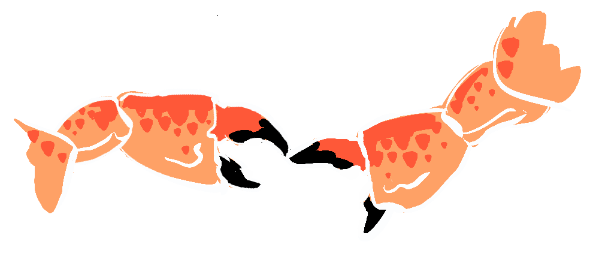

In his 2007 post The Futility of Emergence, Elizier Yudkowsky argues that the term 'emergence' is used vaguely and misleadingly—as a mysterious explanation rather than a real one.
... after the answer of “Why? Emergence!” is given, the phenomenon is still a mystery and possesses the same sacred impenetrability it had at the start.
He critiques the tendency to describe complex macroscopic patterns (like consciousness or whirlpools) as if they have independent causal power, when in reality, they are just the predictable consequences of underlying mechanisms. Where large-scale patterns can be reduced to their component interactions, Yudkowsky suggests we should focus on these underlying mechanisms.

On this blog, we care about explaining complexity without resorting to mysticism—or reductionist dismissal. Curious people want to see the deeper patterns that shape real systems, so we can make sense of the world and reason more effectively. But in our series on Emergence, I've leaned heavily on the idea of emergence to make sense of phenomena that are reducible to underlying mechanisms. I disagree with Yudkowsky that this need be misleading or vague. This post, as per usual will take a cross-disciplinary view, drawing from systems theory, science, history and philosophy. So, let's get specific.
I agree with Yudkowsky that it is possible to over-use the term, and apply it to anything that emerges from underlying mechanisms. So, it's important to distinguish what does and doesn't qualify as 'emergent'.
I'd like to make the case that emergent complexity is where...
- a whole system is more complex than the sum of its parts
- a system is more closely aligned with a macroscopic phenomenon than with its component parts.
So, when we look at an eye, we can see that it can be understood as something that fits the purpose of producing a picture of the physical world. Microscopically it is a configuration of cells, just like a big toe or a testicle, but macroscopically it is more like a camera.
On the other hand, the majority of phenomena that emerge from a system aren't "emergent", in that they do not add complexity, but rather decrease it, consistent with the Second law of thermodynamics. Take the traffic system for instance, this creates heat and noise, increasing entropy. Heat and noise are properties of the system, but they are not emergent properties of the system.
Emergent systems are identified by their (apparent) inverse relationship to entropy.
The traffic system creates noise and heat, but it also creates a level of friction and inefficiency which leads to roading measures that eventually make the roading system more efficient, this will predictably happen, because inefficiency is a constant pressure on the system to change in a particular direction.
Disruption to Environment > Adaptation by Selection > New Species">Now, one could say these changes are the result of the collective decisions of intelligent individuals, and are therefore not genuinely emergent—that is until we see the same patterns of efficiency echo throughout nature independent of intelligence, specifically in the nutrient pathways of slime-moulds.
Friction > Rerouting > System of efficient pathways">When searching for food in a sparse environment, the slime mould Physarum polycephalum naturally forms networks of protoplasmic tubes that connect nutrient sources with astonishing efficiency. Studies reveal that the slime mould’s network design can closely resemble the layout of the Tokyo rail system.
Friction > Rerouting > System of efficient pathways">It is said that the eye has developed independently in more than 20 different species, this is due to the supreme benefit of vision for the survival and reproduction of a species and the transmission of those genes. But if we take Yudkowsky's perspective—emergent phenomena are merely reducible to their component parts and are therefore not real in any meaningful sense—then aren't we wrong to call these 20+ varieties "eyes" at all, or to call what they do "seeing", because they are made of entirely different components.
Friction (physical obstacles) > Reconfiguring of cells > Eyes">It is the fact that we recognise them on a macroscopic scale converging on a common function that it makes sense to call them "eyes". The same is true of other convergent phenomena, like the slime mould and traffic systems.
This convergence is a phenomenon that is best understood from a macroscopic perspective—as an answer to the question "What is the most efficient system of pathways?" (for slime mould and traffic) or "what physical objects are in my vicinity?" (for vision). These questions can be answered by various different systems.
 Friction (physical obstacles) > Reconfiguring of cells > Eyes">At this point it's important to note that a system answering a question, or fitting a macroscopic scaffold or a specified "function" is a teleological perspective that might seem to suggest design—a top-down force determining the shape of a system. And this might be an interpretation Yudkowsky wants to avoid altogether—giving it a wide birth by denying the macroscopic view of a system. But this is unnecessary caution. We can acknowledge macroscopic systems (a top-down perspective) without denying their microscopic (bottom-up) origins. We understand that the emergent system of evolution gives an "illusion of design" it doesn't require the existence of a designer.
One might say that the "design" process itself is actually an emergent outcome of neural activity, analogous to evolution anyway... (so even design isn't really design)
In the cases mentioned so far, the function of the system means that it is "more closely aligned with a macroscopic phenomenon than with its component parts" (the slime mould is aligned with the same macroscopic structure as the traffic system, the eye is aligned with the physical environment) rather than with the complicated configuration of the cells, neurones and electrical signals that comprise the system itself.
This recognition of convergence is a confirmation of emergence.
I'd like to make the case that a good measure of whether a system is emergent, is not whether it is irreducible (no system is provably irreducible) but that something can be described as emergent when it has completed an emergent cycle, in that it has taken a system (the substrate) and, through exposure to some friction in the system, reliably generated a new phenomenon which reaches an equilibrium that now creates a substrate or niche for something new to emerge.
Disruption to Environment > Adaptation by Selection > New Species">To continue with the traffic and slime mould examples, once a system has reached a reliable state of efficiency, then it becomes a substrate or niche for a new emergent cycle on top. A traffic system enables systems like mass food transportation, commerce and social networks not previously possible. Take the internet, another system of transportation (for data), think of all the entirely new industries this spawned, e-commerce, web design, citizen journalism, influencers, even AI.

Similarly, the slime mould Dictyostelium discoideum has been found to have developed 'primitive farming symbiosis'.
Instead of consuming all bacteria in their patch, they stop feeding early and incorporate bacteria into their fruiting bodies. They then carry bacteria during spore dispersal and can seed a new food crop, which is a major advantage if edible bacteria are lacking at the new site. —NatureFriction (over-consumption) > Limiting consumption > Bacterial Farming System">
And this is not unique to slime moulds, according to nature there is a...
... striking convergent evolution between bacterial husbandry in social amoebas and fungus farming in social insectsFriction (over-consumption) > Limiting consumption > Fungal Farming System">
Again, we see convergence as a confirmation of emergence, specifically that an emergent cycle has taken place.
The way I see it, the emergent cycle has a specific structure that we see all around us in nature. We begin with a stable system, but stable systems exist in a world with friction, so at some point they are pathologically disturbed by some constant friction, driving the system out of balance, and it either dies or finds a new equilibrium which incorporates the disturbance, becoming the substrate for a new phenomenon.
There are a few ways we can look at how a friction is incorporated.
- Adaptation—the whole system changes, to create a novel system
- Symbiosis—the original system and pathology develop harmony
- Hierarchy—the pathology becomes a new phenomena dependent on the original system (equilibrium).
I see emergence as the third category, not mere adaptation or symbiosis, but layers of increasing complexity, each dependent on the one below.
New Virus > Development of Immunity > Immune system">A realm that develops in cycles that builds on top of one another is immunity. In The Red Queen, Matt Ridley explains that not only can our immune system develop a memory of anti-bodies against diseases we've faced in our lifetime, but that sexual selection allows for a genetic memory—where resistance to certain diseases can be held dormant in our genes, and rediscovered more efficiently when faced with the same threat generations later. Our genetic memory of history can help us better deal with the echoes of history. This cumulative cycle takes the form of a spiral, allowing for a new layer to be built atop the established substrate.
If we look at the canonical example of emergence—evolution by natural selection—we have something that can be generally termed weak emergence in that evolution is generally adaptive rather than hierarchical. We can see this as a feedback loop that increases capacity.

This is more an adaptive situation because one species does not become the substrate for the other. But, occasionally evolution will result in an emergent spiral.
Competition with other brains > Communication arms race > Language">Here we see an entirely different paradigm 'language' emerge on top of an intelligent species. Language is categorically different from the biological species it is derived from, but it is dependent on it. This is an emergent phenomena.
But this emergent spiral doesn't only manifest in nature, these cycles are ubiquitous across different realms. As I've had this in the back of my head for a while, I've experienced the Baader–Meinhof phenomenon on many occasions, noticing parallels to philosophy, history, science and others.
I think the clearest comes from Hegel (ironically, because Hegel is famously inscrutable)
antithesis > synthesis > Thesis">Hegel's classic model maps the evolution of political ideology and philosophical schools throughout history. It goes—simplistic ideas are vulnerable to argument (friction), and so they are forced to adapt, sometimes landing on entirely new paradigms. When a new paradigm gets ingrained and inflexible, it then falls victim to a type of Goodhart's Law becoming vulnerable to radical new ideas.
Although Hegel's model looks like a cycle, it is actually a spiral, as it refers to History which moves chronologically—history repeats, but if we record and remember the lessons of history, cycles don't need to fold back exactly on themselves.
In the realm of science, Karl Popper has a related cycle regarding intellectual discovery...
P1 > TT > EE > P2
In Popper's Intellectual autobiography 'Unended Quest', he holds that the accumulation of knowledge follows a similar loop, you begin with a problem (P1), develop a tentative theory (TT), then eliminate the errors in that theory (through the scientific method, peer review etc) creating a new equilibrium. And until we come up with a genuine theory of everything, the loose ends of that theory will inevitably lead to friction and a new problem 2.
Unlike our cycle, Popper starts at the problem, but shift everything forward and you have the same cycle.
TT > EE > P2">Popper also draws parallels between inorganic physics, biology and intellectual discovery. Popper refers to organisms as problem-solving structures. My sense is that creative processes whether by nature or design follow this pattern.
Now that we have a sense of emergent cycles—what they are and what they are not, looking in detail at Yudkowsky's criticisms, we see that his target is not actually emergence (as I understand it at least). Yudkowsky asserts:
Gravity arises from the curvature of spacetime, according to the specific mathematical model of General Relativity.
Here, Yudkowsky lampoons the case that gravity is an emergent property of the curvature of space time, and he is right to do so, but only because of the way he has formed the argument. Gravity does not emerge from the curvature of spacetime, gravity is the curvature of spacetime. General relativity requires the existence of mass, for this model—it does not explain how mass exists. Theories of emergent gravity like the one I've explored, target how mass itself arises and the resulting gravitational effects, rather than how gravity can be modelled.
Yudkowsky also takes aim at intelligence:
I have lost track of how many times I have heard people say, “Intelligence is an emergent phenomenon!” as if that explained intelligence.
I would argue the description of something as emergent doesn't explain what something is, rather it fits it to a recognisable structure that can help us understand it better. By recognising the natural selection of neurones, through the environment of stimulus, we can understand it by analogy to evolution, another emergent cycle (that intelligence itself rests upon) and it then no longer...
... possesses the same sacred impenetrability it had at the start.
Yudkowsky extends this (somewhat uncharitable) reading of emergence into full straw-man when he equates emergence with magic. And I think this helps to pin-point the key concern he has when looking at the idea of emergent phenomena. I share this concern, that emergence...
... gives you a sacred mystery to worship. Emergence is popular because it is the junk food of curiosity. You can explain anything using emergence, and so people do just that; for it feels so wonderful to explain things.
As mentioned, I think this caution against attributing the properties of systems to design (or magic in this case) is unnecessary. We can understand phenomena in macroscopic terms like function, purpose, as a solution to a problem, or an answer to a question and we can recognise alignment with other macroscopic phenomena by analogy without denying the microscopic nature of causality. Emergence is a way of understanding complex systems that acknowledges that complexity arises out of particular sets of simple rules, in a way that seems wondrous... even magical, but is, by definition, not magical.
If this gave you a new way to think about the world, please share it—or better yet, tell me what other spirals you see in the world. Hit the comments.

I don't doubt some people do use "emergence" as a way to curtail their own curiosity, and hand wave over more complex and nuanced (and effortful) engagement with the world around us. But, I don't see this as the purpose of 'emergence' as term. I see the term as a way of aligning our understanding of something novel that we might not yet fully comprehend with other macroscopic phenomena we do comprehend. By understanding emergence as a series of cycles that emerge from friction, reach equilibrium and become a substrate for the next cycle, we can better respond or cater to the needs of that system—seeing the forest despite the trees.